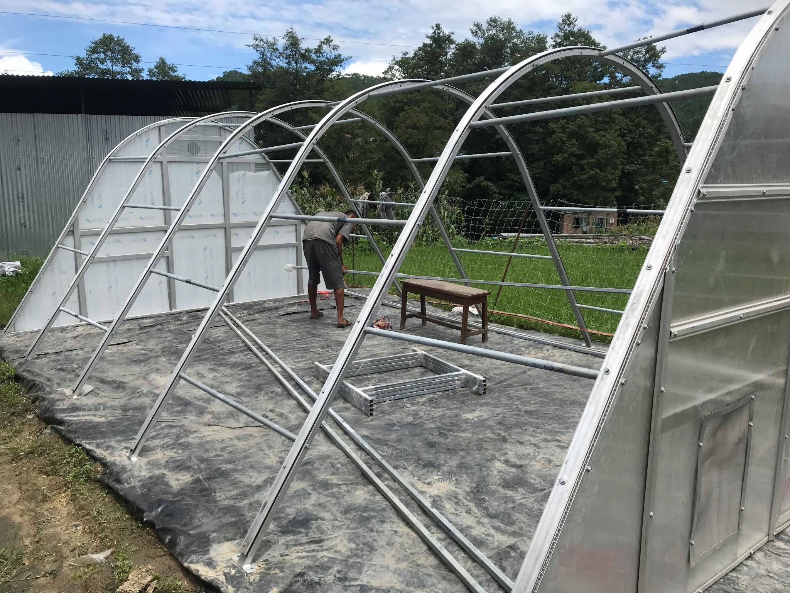
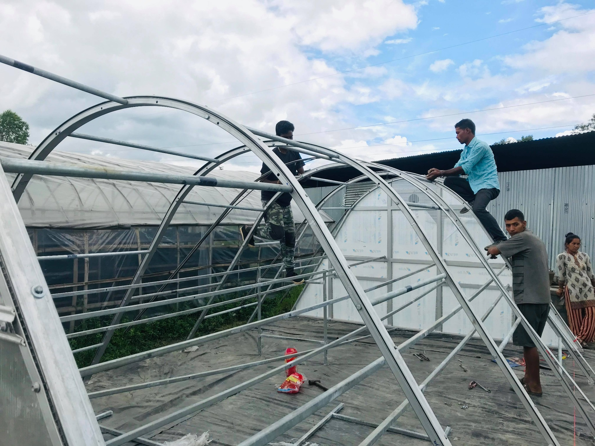
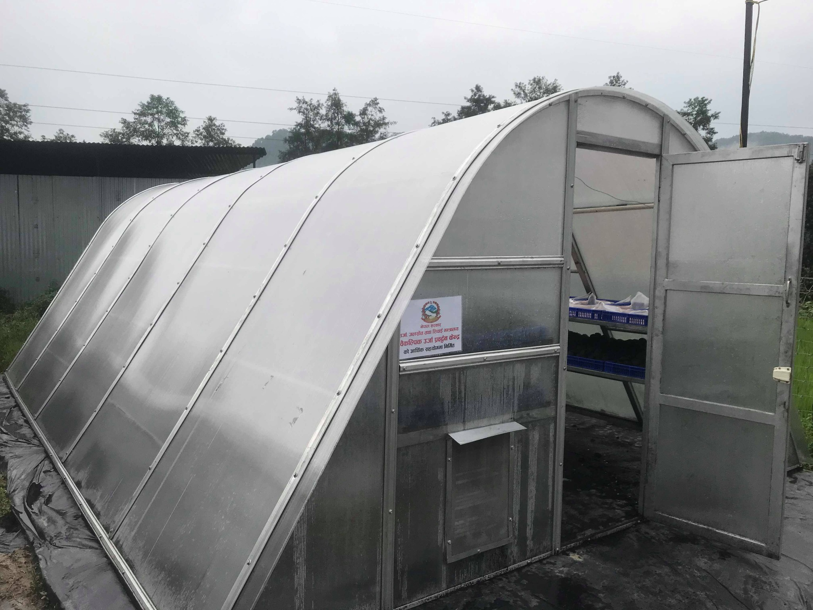
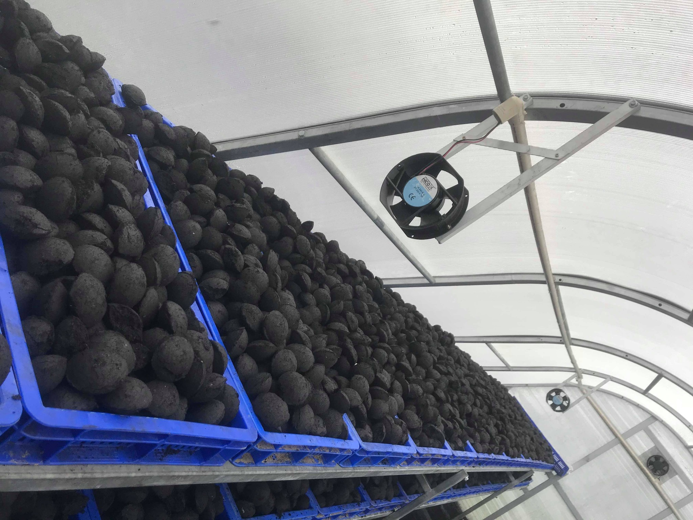
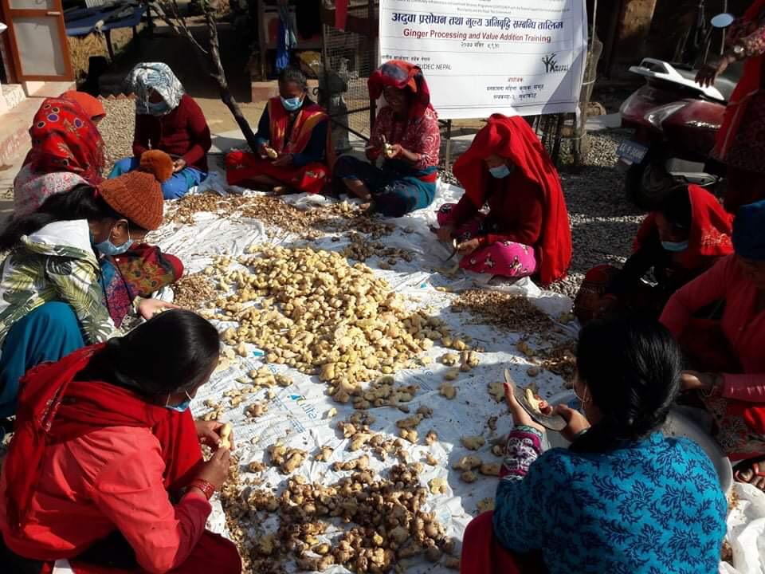
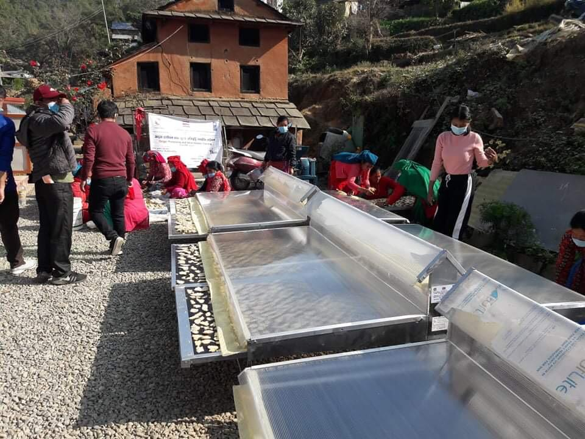
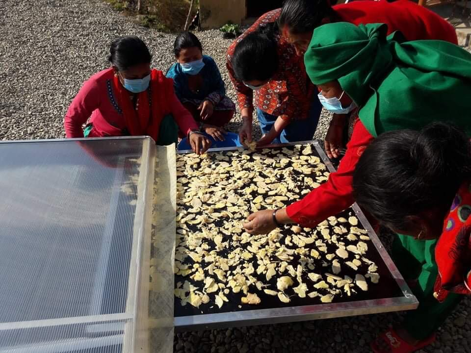
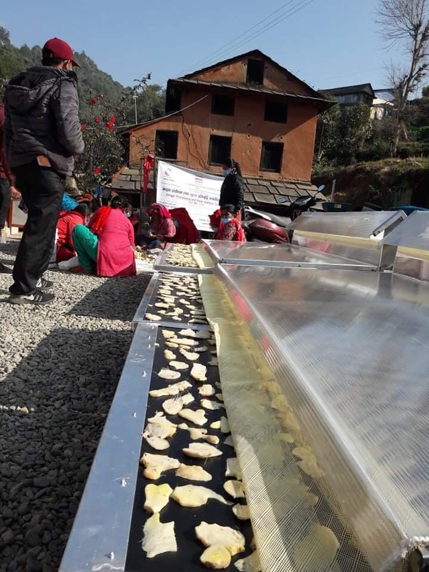
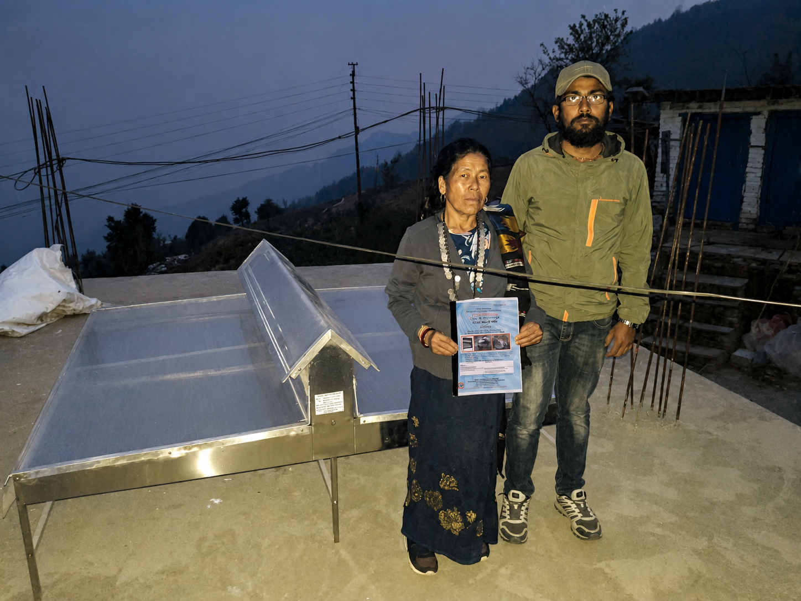

Walk-in hemi-cylindrical enclosure
- Approx. 12.5 × 8 × 7 ft
- Galvanized structural framing
- Transparent polycarbonate cladding
- Modular construction concept
ENGINEERING • AGRICULTURAL DRYING SYSTEMS
This section brings together my work on agricultural drying systems, from designing and locally fabricating a greenhouse dryer prototype to installing larger dryers at project sites and working with smaller conduction-based drying systems for more compact applications.
01 • FLAGSHIP CASE STUDY • PRODUCT DEVELOPMENT
Design and fabrication of a 100 ft² solar greenhouse dryer prototype
Aastha Engineering Solutions Pvt. Ltd. • National Innovation Center • 2020
WHY THIS PROJECT EXISTED
Greenhouse dryers of this type were being sourced from India, but the cost made them difficult to justify for many of the farmers they were intended to serve. I wanted to see whether the same basic idea could be translated into something that could be manufactured in Nepal.
The goal was not to make the system cheaper by removing useful functions. It was to understand the product properly, redesign it around local fabrication, source as much as possible within Nepal, and reduce dependence on a complete imported unit.
I was not trying to redesign solar drying.
I was trying to redesign how we obtained the dryer.01 • UNDERSTAND THE PRODUCT
I began by studying the existing Indian system as a technical reference. I broke it down into the parts that made it work: the curved enclosure, structural members, transparent cladding, tray arrangement, fastening system, circulation fans, exhaust, access points, controls, and supporting hardware.
From there, I used AutoCAD to develop the geometry and arrangement for a locally manufacturable version rather than treating the imported dryer as one indivisible product.

02 • LOCALIZATION
Once the design was defined, I prepared a material breakdown and searched different suppliers to understand what could realistically be sourced in Nepal. Procurement was not something that happened after engineering. Material availability became one of the design constraints.
In the first stage, both the specialized polycarbonate sheet and the food-grade HDPE trays had to be sourced from abroad. Later, we identified a suitable local source for the trays, reducing the imported portion of the system further. The specialized polycarbonate sheet remained the principal component that still needed external sourcing.
03 • FROM CAD TO FABRICATION
National Innovation CenterThe National Innovation Center supported the idea of building useful technology in Nepal and making it more accessible to farmers. I communicated the concept and its purpose to Mahabir Pun, and the Center supported fabrication of the first prototype.
I stayed physically involved during fabrication rather than handing over the drawings and waiting for the finished structure. The fabrication team was a major part of translating the design into a real system.


DESIGN VALIDATION
One of the most useful validations of the AutoCAD work came during fabrication: the prototype largely followed the original drawings without requiring major redesign.
The first 100 ft² prototype took roughly four days to manufacture. Being present through fabrication allowed me to see directly how dimensions, bends, joints, access, tray supports, cladding and fan positions translated from a drawing into a physical product.
04 • HOW IT WORKS
05 • WORKING PROTOTYPE
We tested the completed dryer after fabrication rather than treating construction itself as the finish line. The system operated successfully and validated the basic structure, airflow and drying concept.
The original prototype remains at the National Innovation Center and, to my knowledge, is still functioning there.
What mattered to me was not that greenhouse drying itself was new. We had taken a system that previously arrived as an imported product and proved that it could instead begin with a drawing, a material list and local fabrication in Nepal.


06 • FROM PROTOTYPE TO SCALE
The first dryer established the basic tunnel geometry, tray arrangement and airflow concept. Increasing capacity did not require starting again from zero. The same design language could be extended by increasing structural length, tray capacity, airflow provisions and the corresponding material quantities.
The 250 ft² configuration shown here was developed after the working prototype as a larger design variant, while retaining the same core greenhouse-drying concept.

WHAT THIS PROJECT REQUIRED
We were not trying to reinvent solar drying.
We were trying to change where the dryer had to come from.02 • FIELD INSTALLATION • SCALE-UP
Complete installation of a 250 ft² solar greenhouse dryer
Sanga, Nepal • Aastha Engineering Solutions Pvt. Ltd.
The first 100 ft² dryer proved we could make it here. Sanga was where the larger system had to be assembled, completed and put to work in the field.
FROM 100 FT² TO 250 FT²
The 250 ft² installation retained the curved greenhouse geometry of the prototype while expanding the enclosed drying area and internal product capacity.
I worked through the complete installation: structural assembly, longitudinal supports, polycarbonate enclosure, entrance, tray racks, circulation and exhaust fans, control components, final adjustments, testing and preparation for operation.




MY ROLE
Structure to operationMy responsibility covered the complete field installation. I worked through the structural setup, fixing of the enclosure, installation of internal tray supports, fan and ventilation arrangement, control components, final adjustments and testing.
The work ended only when the different parts were functioning together as one usable drying system.

The prototype taught me how the dryer could be built.
Sanga taught me what it took to install the larger system completely in the field.03 • COMMUNITY APPLICATION • SOLAR CONDUCTION DRYER
Three Solar Conduction Dryers for ginger processing
Manakamana Mahila Krishi Samuha • Nuwakot, Nepal • 2021
A compact dryer mattered here because the technology had to fit the scale at which the group actually processed its product.
COMMUNITY USE
The Solar Conduction Dryer offered a smaller alternative to a walk-in greenhouse system. The modular units could be placed close to the users, loaded directly and operated without constructing a permanent drying chamber.
At Manakamana Mahila Krishi Samuha, the dryers were used alongside ginger preparation and value-addition activities. The photographs show the complete chain from product preparation to loading and drying at the group level.




WHY THIS SYSTEM FIT
The greenhouse dryer creates a larger walk-in drying chamber. The Solar Conduction Dryer reduces the system to a compact modular unit that can be deployed much closer to an individual user or small group. The engineering choice depends on the quantity, site and way the product is actually handled.
04 • MUNICIPAL DEPLOYMENT • SOLAR CONDUCTION DRYER
Delivery, installation and field setup of Solar Conduction Dryers
Modi Rural Municipality • Parbat, Nepal • April 2021
One dryer is a piece of equipment. Seven become a deployment problem.
FIELD DEPLOYMENT
In April 2021, seven Solar Conduction Dryers were supplied for use within Modi Rural Municipality.
I personally brought the products to the site and set them up. My role covered delivery, on-site installation and physical setup so the units were properly assembled and ready for use in the field.
WHY THIS PROJECT WAS DIFFERENT
The value of the compact system was its ability to reach more users without requiring a permanent greenhouse structure at every location. With several units being deployed, consistency in transport, assembly, positioning and setup became part of the engineering task.
The project moved the same drying technology from a single-group application into a broader municipal setting.

Engineering is not finished when a product leaves the workshop.
For this project, it finished when the dryer reached the user, was set up and was ready to work.